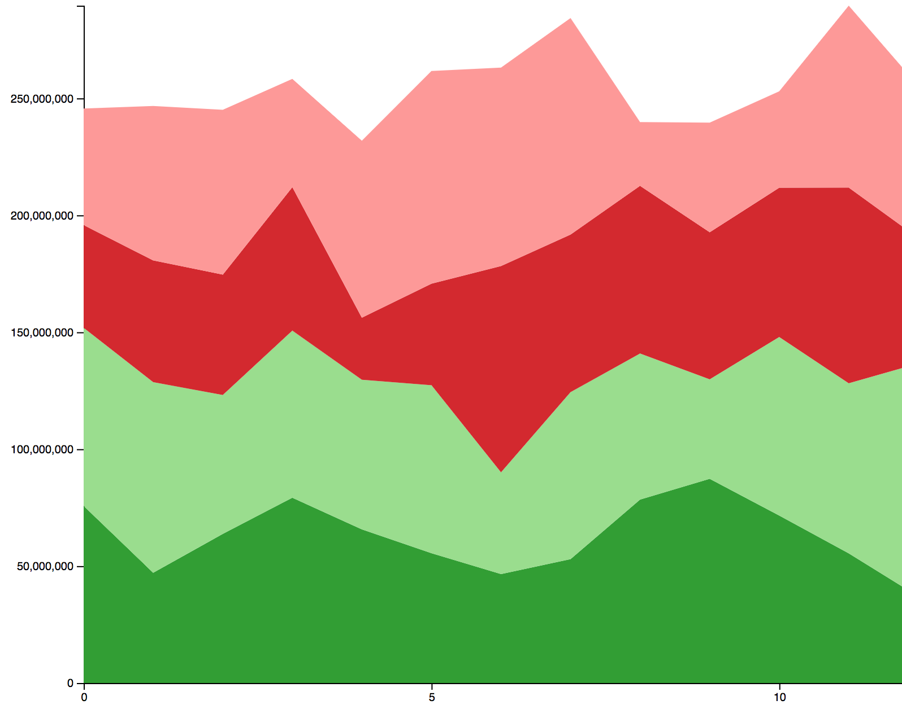
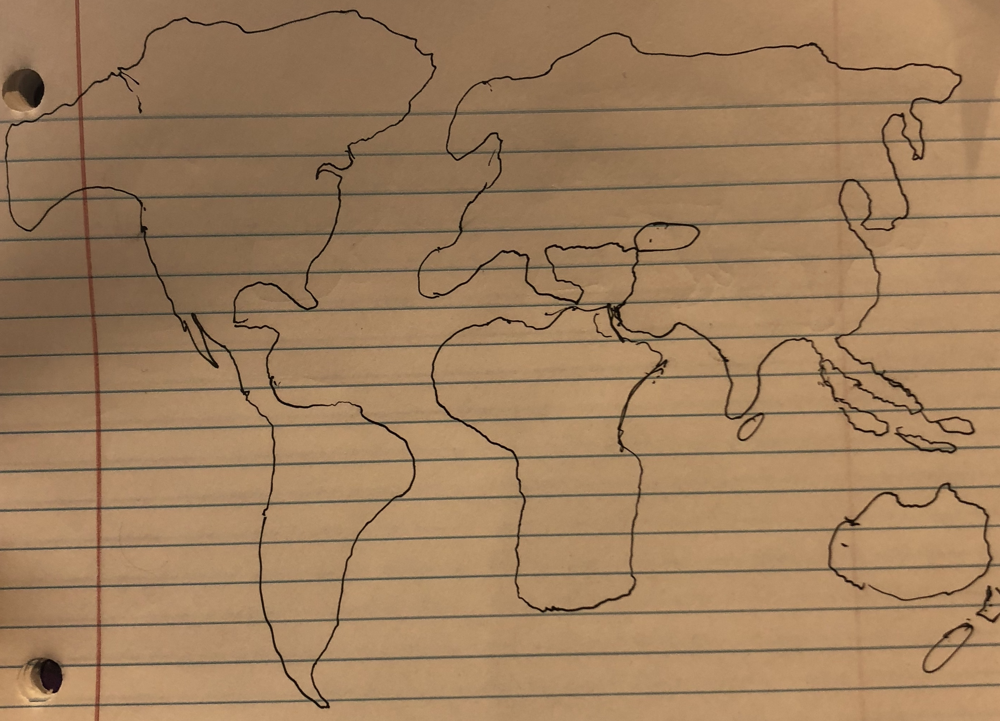
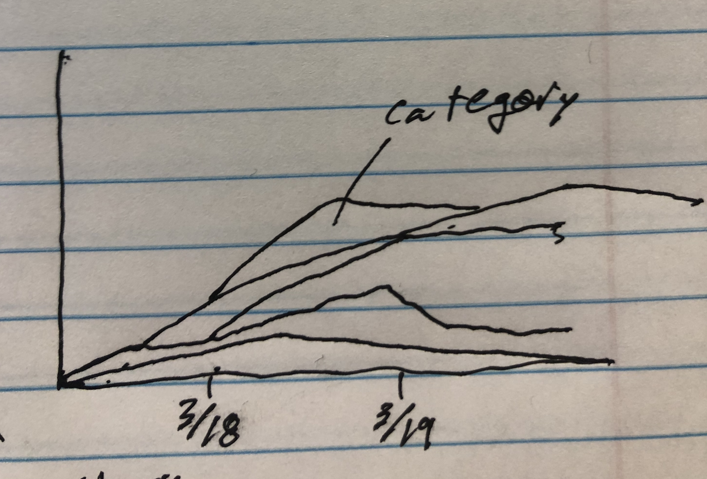
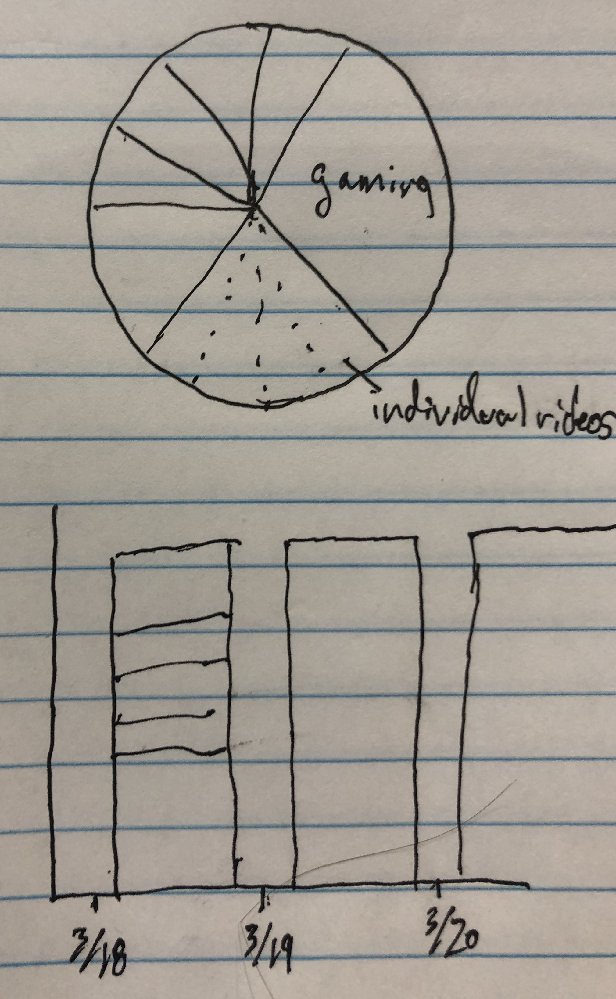
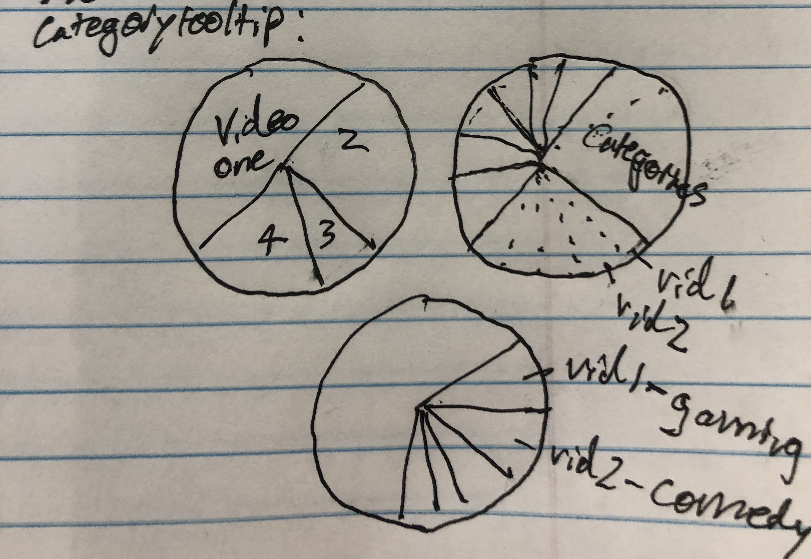

Process Book
The current area chart design
This area chart works, and looks good with false youtube trending data. It charts the number of views of the top 50 trending videos, and organizes them by category; the fake data shows four of these categories. However, when we perform API calls to YouTube, the data is updated by YouTube so slowly that the area chart flatlines. We have ideas for solutions to make our data more interesting: Put the visualization on an Amazon ec2, and make an API call every 12 hours, and save the data so we can animate its appearance. This way the data has a more visually stimulating appearance.
Our current area chart design

These are our old designs
World Map - We intend to make this map clickable, with borders included. A user will be able to click a country where YouTube is available and have the area chart display the data from that region.

Catergory Popularity charts - These were our original ideas for how to show the popularity by views of different categories on YouTube. We went with the area chart.


Possible Tooltips - These are some potential ideas to make our area chart more compelling, and provide data unavailable in the area chart.
